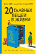

Эта книга построена как чек-лист всего необходимого для счастливой жизни и состоит из двадцати коротких, но очень глубоких и трогательных рассказов. Мама, лучший друг, своя комната, домашние питомцы, велосипед, любимые блюда, музыкальные инструменты, книги – это далеко не все темы, которые раскрываются в книге. Ее автор, Кристоф Хайн – один из самых известных писателей в Германии. А художница Ротраут Сюзан Бернер давно завоевала сердца детей и родителей в России.